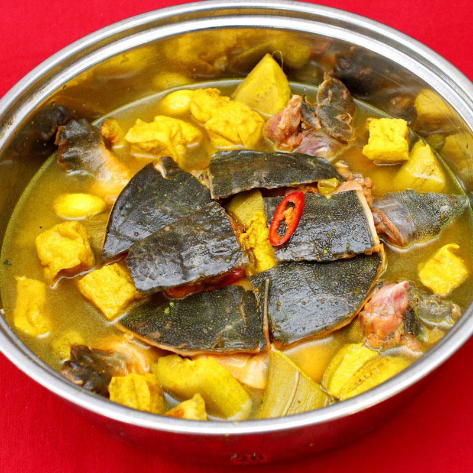

Ba ba nấu chuối

Baba nấu chuối mang tinh túy của ẩm thực miền Bắc với hương vị ngọt bùi của chuối xanh kết hợp cùng thịt baba dai, thơm hấp dẫn. Ngồi quây quần bên những người thân yêu và thưởng thức một nồi baba nấu chuối thơm phức, nóng hổi trong một ngày mưa lạnh ở Sài Gòn thì quả là đúng điệu.